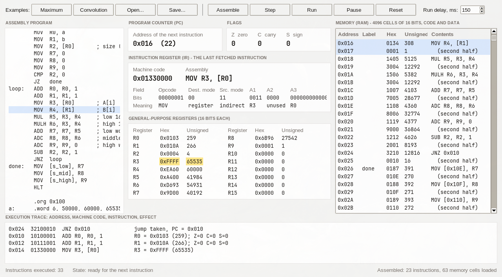

Одна программа — эмулятор процессора, который мы сами придумали, — и отчёт по ней.
Эмулятор — это программа, которая ведёт себя как процессор: хранит в переменных его память и регистры и шаг за шагом выполняет команды, меняя эти переменные. На экране видно, что изменилось после каждой команды.
Не путайте два языка. Python — язык, на котором написан эмулятор. Ассемблер — язык, на котором написаны программы для эмулируемого процессора.
| Требование | У нас |
|---|---|
| Трёхадресные команды | Каждая команда содержит поля A1, A2, A3: результат и два операнда |
| Архитектура фон Неймана | Одна память на 4096 ячеек, в ней и команды, и данные |
| RISC: фиксированная длина; с памятью работают только пересылки | Все команды по 32 бита, один формат; память трогает только MOV |
| Четыре типа адресации: непосредственная, регистровая, прямая, косвенно-регистровая | Все четыре, тип виден по записи операнда: 5, R1, [max], [R0] |
| Пересылки, арифметика и логика, длинная арифметика, условные переходы | MOV; ADD SUB MUL AND…; ADC SBB MULH; JZ JNZ JC JNC… |
| На экране: регистры (включая аккумулятор и счётчик), счётчик команд, регистр команд с полями и ассемблерной записью, флаги | Всё показано и подписано; R1 — аккумулятор, R2 — счётчик цикла |
| Массив в памяти, первый элемент — его размер, обработка в цикле | arr: .word 6, 12, 7, 99, 4, 31, 18 |
| Пользователь вводит программу на ассемблере, эмулятор сам переводит её в машинный код | Редактор в окне и встроенный ассемблер |
| Числа без знака (варианты 8–16) | Все числа 0…65535, сравнение через флаг переноса |
Свёртка в пособии — это не «свёртка сигналов» с 11 результатами, а одно число, сумма попарных произведений (формула 4.1): S = A₁·B₁ + A₂·B₂ + … + AN·BN. В математике это называется скалярным произведением.
Процессор умеет одно: взять команду из памяти, выполнить её и перейти к следующей.
Память — это пронумерованные ячейки. Номер ячейки — адрес, то, что в ней лежит, — содержимое. Это разные вещи: по адресу 0x107 может лежать число 99.
Чтобы различать N ячеек, адрес должен иметь log₂N бит. У нас 4096 = 2¹² ячеек, значит адрес — 12 бит.
Фон Нейман: команды и данные лежат в одной памяти, в разных её частях. Команда — такое же число, как и данные; программа может прочитать и даже переписать саму себя.
Гарвардская: две отдельные памяти — для команд и для данных. Адрес 5 в одной и адрес 5 в другой — разные ячейки. Читать их можно одновременно, зато нельзя отдать данным место, не занятое командами.
Регистр — быстрая ячейка внутри самого процессора. Арифметика выполняется только над регистрами.
| R0…R15 | Общего назначения (РОН), по 16 бит. Хранят числа, адреса, счётчики |
| PC | Счётчик команд: адрес следующей команды |
| IR | Регистр команд: команда, которая сейчас исполняется, 32 бита |
| Z C S | Флаги: по одному биту о результате последней операции |
«Аккумулятор» и «счётчик» — это роли. В наших программах R1 накапливает ответ, R2 считает оставшиеся итерации.
MOV обращается к памяти; или переход записывает в PC новый адрес.В регистре 16 бит. Всё, что в них не помещается, уходит во флаг переноса — и на этом держится и сравнение, и длинная арифметика.
16 бит дают 2¹⁶ = 65 536 комбинаций: числа от 0 до 65 535 (0x0000…0xFFFF).
Одна шестнадцатеричная цифра — ровно 4 бита, поэтому 16 бит — это 4 цифры:
50000 = C 3 5 0 1100 0011 0101 0000
0xFFFF 0x0003 + 0x0001 − 0x0005 ──────── ──────── 1 0x0000 1 0xFFFE ↑ C = 1 ↑ C = 1 (заём)
Регистр хранит только младшие 16 бит. «Лишний» 17-й бит не теряется: он попадает во флаг C.
| Флаг | Название | Равен 1, когда |
|---|---|---|
| Z | Zero, флаг нуля | результат равен нулю |
| C | Carry, флаг переноса | сложение: результат не поместился в 16 бит; вычитание: пришлось занимать (уменьшаемое меньше вычитаемого); умножение: произведение больше 65 535 |
| S | Sign, флаг знака | старший (15-й) бит результата равен 1 |
Флаги меняют только арифметико-логические команды. MOV и переходы их не трогают — поэтому между вычислением и условным переходом можно спокойно пересылать данные.
CMP X, Y — это вычитание X − Y, результат которого выбрасывается. Остаются только флаги:
| Флаги после CMP X, Y | Вывод | Переход |
|---|---|---|
| Z = 1 | X = Y | JZ |
| Z = 0 | X ≠ Y | JNZ |
| C = 1 | X < Y (был заём) | JC |
| C = 0 | X ≥ Y | JNC |
А если бы числа были со знаком (варианты 1–7)? Отрицательные числа хранят в дополнительном коде: −x = (инверсия всех битов x) + 1. Например, −1 = 0xFFFF. Сумматору всё равно — он складывает биты одинаково; меняется только толкование. Старший бит становится знаком (флаг S), а переполнение ловит отдельный флаг OF, потому что C для знаковых чисел ничего не значит. Для сравнения нужны были бы переходы по S и OF, а для умножения — отдельная знаковая команда. В нашем варианте числа без знака, поэтому хватает Z и C.
Набор всего, что процессор умеет, и правило, как каждая команда записана числом.
Одно и то же действие C = A + B в машинах разной адресности:
| Адресность | Программа | Где операнды и результат |
|---|---|---|
| Трёхадресная | ADD C, A, B | Всё указано явно: результат и оба операнда. Наш вариант |
| Двухадресная | MOV C, A · ADD C, B | Результат ложится на место первого операнда |
| Одноадресная | LDA A · ADD B · STA C | Первый операнд и результат — всегда в аккумуляторе |
| Безадресная | PUSH A · PUSH B · ADD | Операнды на вершине стека, результат туда же |
Чем меньше адресов, тем короче и проще команда, но тем больше команд нужно на ту же работу.
| КОП | Код операции: что делать. 8 бит — до 256 команд |
| ТП, ТИ | Тип адресации приёмника и источника: как понимать операнд |
| A1 | Номер регистра для результата. 4 бита — 16 регистров |
| A2 | Номер регистра с первым операндом |
| A3 | Второй операнд: номер регистра, число или адрес. 12 бит — число до 4095 или любой адрес памяти |
Смысл команды: A1 ← A2 операция A3. Если поле команде не нужно, в нём нули — формат от этого не меняется.
Границы полей совпадают с шестнадцатеричными цифрами, поэтому машинный код читается глазами: КК Т 1 2 333. Цифра Т — это ТП и ТИ вместе. Пример: 0x10111001 → КОП 10 (ADD), Т 1 (число), A1 1, A2 1, A3 001 → ADD R1, R1, 1.
Пусть R2 = 0x0105, а в ячейке памяти 0x105 лежит число 99. Четыре команды отличаются только типом источника:
| Код | Тип | Ассемблер | Машинный код | Что попадёт в R1 |
|---|---|---|---|---|
01 | Непосредственная | MOV R1, 12 | 01 1 1 0 00C | 12 — число из самой команды |
00 | Регистровая | MOV R1, R2 | 01 0 1 0 002 | 0x0105 — содержимое R2 |
10 | Прямая | MOV R1, [0x105] | 01 2 1 0 105 | 99 — ячейка, адрес которой в команде |
11 | Косвенно-регистровая | MOV R1, [R2] | 01 3 1 0 002 | 99 — ячейка, адрес которой в R2 |
Квадратные скобки означают «содержимое памяти по этому адресу». Косвенная адресация нужна для массивов: адрес лежит в регистре, его можно увеличивать и так идти по элементам.
Запись в память — та же команда MOV, только тип «память» стоит у приёмника: MOV [0x105], R1 → 01 8 1 0 105, MOV [R2], R1 → 01 C 1 0 002. У MOV одна сторона всегда регистр (его номер в A1), вторая описана в A3; направление задают ТП и ТИ.
Имя метки без скобок — это её адрес как число: MOV R0, arr кладёт в R0 адрес массива, а MOV R0, [arr] — его первый элемент.
| КОП | Команда | Действие | Флаги |
|---|---|---|---|
00 | HLT | останов | — |
01 | MOV приёмник, источник | пересылка; единственная команда, работающая с памятью | — |
10 | ADD A1, A2, A3 | A1 ← A2 + A3 | Z C S |
11 | ADC A1, A2, A3 | A1 ← A2 + A3 + C | Z C S |
12 | SUB A1, A2, A3 | A1 ← A2 − A3 | Z C S |
13 | SBB A1, A2, A3 | A1 ← A2 − A3 − C | Z C S |
14 | MUL A1, A2, A3 | A1 ← младшие 16 бит A2 × A3 | Z C S |
15 | MULH A1, A2, A3 | A1 ← старшие 16 бит A2 × A3 | Z C S |
16 | CMP A2, A3 | A2 − A3, результат не сохраняется | Z C S |
20 21 22 | AND OR XOR | поразрядные И, ИЛИ, исключающее ИЛИ | Z S, C = 0 |
23 24 | SHL SHR | логический сдвиг влево и вправо на A3 бит | Z S, C = выдвинутый бит |
30 | JMP метка | PC ← адрес, всегда | — |
31 32 | JZ JNZ | переход, если Z = 1 / Z = 0 | — |
33 34 | JC JNC | переход, если C = 1 / C = 0 | — |
35 36 | JS JNS | переход, если S = 1 / S = 0 | — |
У арифметики и логики A1 и A2 — всегда регистры, A3 — регистр или число. Буква N в названии перехода значит «не»: JNZ — «если не ноль».
Сдвиг вправо ставит нужное поле в младшие биты, маска «И» отрезает всё лишнее.
# IR = 0x10111001 КОП = (IR >> 24) & 0xFF # 0x10 ADD ТП = (IR >> 22) & 0x3 # 00 регистр ТИ = (IR >> 20) & 0x3 # 01 число A1 = (IR >> 16) & 0xF # 1 R1 A2 = (IR >> 12) & 0xF # 1 R1 A3 = IR & 0xFFF # 1
Маска — число, у которого единицы стоят на нужных битах: 0xF = 1111 оставляет 4 бита, 0xFFF — 12 бит.
Дальше исполнение: взять R1 и число 1, сложить в АЛУ, обновить флаги, записать результат в R1. Итог: ADD R1, R1, 1.
Сборка команды ассемблером — обратное действие: поля сдвигаются влево и склеиваются операцией «ИЛИ».
В машинном коде нет ни if, ни for. Есть только «изменить PC, если флаг такой-то».
Обычно PC сам идёт от команды к команде. Команда перехода записывает в PC другой адрес — и исполнение продолжается оттуда. Условный переход делает это только при нужном значении флага; иначе процессор просто идёт дальше. Поэтому условие всегда состоит из двух команд: сначала арифметика или CMP выставляет флаги, затем переход их проверяет.
; if (R1 < R3) R1 = R3 CMP R1, R3 ; C=1, если R1 < R3 JNC skip ; R1 ≥ R3 — мимо MOV R1, R3 skip: …
Переход делается по обратному условию: он обходит действие, которое выполнять не надо.
MOV R2, 6 ; счётчик loop: … ; тело цикла SUB R2, R2, 1 JNZ loop ; не ноль — ещё раз
Счётчик убывает до нуля. SUB сам выставляет Z, отдельный CMP не нужен.
Метка (loop:) — это имя адреса. Она не превращается в команду и не занимает памяти: ассемблер просто запоминает, какой адрес у следующей за ней команды, и подставляет его в переходы. В программе максимума loop = 0x00A, поэтому JNZ loop кодируется как 3210000A.
| Адресация | Что в команде | Свойства |
|---|---|---|
| Абсолютная — у нас | сам адрес: PC ← A3 | Просто; 12 бит поля покрывают всю память |
| Относительная | смещение: PC ← PC + A3 | Смещение короче адреса и может быть отрицательным; код можно переносить в другое место памяти |
Число не помещается в регистр — значит, храним его в нескольких регистрах и считаем по частям, как в столбик.
Зачем она в свёртке. Элементы — до 65 535. Произведение двух таких чисел — до 4 294 836 225, это 32 бита. Сумма шести произведений — до ≈ 2,58·10¹⁰, это уже 35 бит. Регистр же — 16 бит. Поэтому произведение занимает два регистра, а сумма S — три (48 бит).
MUL R5, R3, R4 ; младшие 16 бит MULH R6, R3, R4 ; старшие 16 бит
60000 × 60000 = 3 600 000 000
= 0x D693 A400
R6 R5
Так же устроено в RISC-V (mul / mulhu). В x86 команда MUL кладёт обе половины в пару регистров DX:AX — это неявная адресация, для трёхадресной машины она не нужна.
ADD R7, R7, R5 ; младшие, C ← перенос ADC R8, R8, R6 ; средние + C ADC R9, R9, 0 ; старшее + C
R9 R8 R7 S 0000 9502 F900 + D693 A400 перенос 1 ← 1 ← ──────────────── S 0001 6B96 9D00
ADC — то же сложение, но прибавляет ещё и флаг C, оставшийся от предыдущего сложения. Так перенос из младшего слова попадает в следующее — ровно как «один в уме» при сложении в столбик, только разряд здесь — целое 16-битное слово. Порядок важен: между ADD и ADC не должно быть команд, меняющих флаги. Для вычитания есть зеркальная пара SUB / SBB.
Идём по массиву указателем, держим лучший результат в аккумуляторе, считаем оставшиеся элементы.
| R0 | указатель: адрес текущего элемента | R2 | счётчик: сколько элементов осталось |
| R1 | аккумулятор: текущий максимум | R3 | текущий элемент |
адрес маш. код ассемблер 0x000 0110 0100 MOV R0, arr ; R0 ← адрес массива (непосредственная) 0x002 0132 0000 MOV R2, [R0] ; R2 ← размер, первая ячейка (косвенно-регистровая) 0x004 0111 0000 MOV R1, 0 ; максимум ← 0: меньше беззнаковых не бывает 0x006 1610 2000 CMP R2, 0 ; массив пуст? 0x008 3110 0018 JZ done 0x00A 1010 0001 loop: ADD R0, R0, 1 ; указатель на следующий элемент 0x00C 0133 0000 MOV R3, [R0] ; R3 ← элемент 0x00E 1600 1003 CMP R1, R3 ; максимум − элемент; C = 1, если максимум меньше 0x010 3410 0014 JNC next ; максимум ≥ элемента — оставить 0x012 0101 0003 MOV R1, R3 ; новый максимум (регистровая) 0x014 1212 2001 next: SUB R2, R2, 1 ; счётчик − 1 0x016 3210 000A JNZ loop ; не ноль — следующий элемент 0x018 0181 0107 done: MOV [max], R1 ; сохранить ответ (прямая) 0x01A 0000 0000 HLT 0x100 0006 000C 0007 0063 0004 001F 0012 arr: .word 6, 12, 7, 99, 4, 31, 18 0x107 0000 max: .word 0
| Итерация | R0 | Элемент R3 | CMP R1, R3 | Флаг C | Максимум R1 | Счётчик R2 |
|---|---|---|---|---|---|---|
| 1 | 0x101 | 12 | 0 − 12 | 1 → заменить | 12 | 5 |
| 2 | 0x102 | 7 | 12 − 7 | 0 | 12 | 4 |
| 3 | 0x103 | 99 | 12 − 99 | 1 → заменить | 99 | 3 |
| 4 | 0x104 | 4 | 99 − 4 | 0 | 99 | 2 |
| 5 | 0x105 | 31 | 99 − 31 | 0 | 99 | 1 |
| 6 | 0x106 | 18 | 99 − 18 | 0 | 99 | 0 → Z = 1, выход |
Ответ: в ячейке max (0x107) число 99 = 0x0063. Всего выполнено 45 команд.
Что стоит заметить. В программе использованы все четыре типа адресации. Размер массива не зашит в программу, а читается из его первой ячейки — программа работает с массивом любой длины. Проверка CMP R2, 0 защищает от пустого массива: без неё счётчик ушёл бы в 0 − 1 = 65 535 и цикл выполнился бы 65 536 раз.
Тот же цикл, но два указателя, а в теле — 32-битное произведение и 48-битная сумма.
R0, R1 — указатели на элементы A и B · R2 — счётчик · R3, R4 — текущие элементы · R6 : R5 — произведение, старшая и младшая половины · R9 : R8 : R7 — сумма S, от старшего слова к младшему.
адрес маш. код ассемблер 0x000 0110 0100 MOV R0, a ; указатель на A 0x002 0111 0107 MOV R1, b ; указатель на B 0x004 0132 0000 MOV R2, [R0] ; счётчик ← размер 0x006 0117 0000 MOV R7, 0 ; S ← 0 (три слова) 0x008 0118 0000 MOV R8, 0 0x00A 0119 0000 MOV R9, 0 0x00C 1610 2000 CMP R2, 0 ; массив пуст? 0x00E 3110 0026 JZ done 0x010 1010 0001 loop: ADD R0, R0, 1 ; следующие элементы 0x012 1011 1001 ADD R1, R1, 1 0x014 0133 0000 MOV R3, [R0] ; R3 ← A[i] 0x016 0134 0001 MOV R4, [R1] ; R4 ← B[i] 0x018 1405 3004 MUL R5, R3, R4 ; младшая половина произведения 0x01A 1506 3004 MULH R6, R3, R4 ; старшая половина 0x01C 1007 7005 ADD R7, R7, R5 ; младшие слова, C ← перенос 0x01E 1108 8006 ADC R8, R8, R6 ; средние слова + перенос 0x020 1119 9000 ADC R9, R9, 0 ; старшее слово + перенос 0x022 1212 2001 SUB R2, R2, 1 0x024 3210 0010 JNZ loop 0x026 0187 010E done: MOV [s_low], R7 ; сохранить S в память 0x028 0188 010F MOV [s_mid], R8 0x02A 0189 0110 MOV [s_high], R9 0x02C 0000 0000 HLT 0x100 0006 C350 EA60 FFFF 04D2 0007 9C40 a: .word 6, 50000, 60000, 65535, 1234, 7, 40000 0x107 0006 C350 EA60 FFFF 10E1 0009 7530 b: .word 6, 50000, 60000, 65535, 4321, 9, 30000 0x10E 0000 0000 0000 s_low, s_mid, s_high
| i | Aᵢ | Bᵢ | Произведение R6 : R5 | Сумма R9 : R8 : R7 после | S в десятичном виде |
|---|---|---|---|---|---|
| 1 | 50 000 | 50 000 | 9502 F900 | 0000 9502 F900 | 2 500 000 000 |
| 2 | 60 000 | 60 000 | D693 A400 | 0001 6B96 9D00 | 6 100 000 000 |
| 3 | 65 535 | 65 535 | FFFE 0001 | 0002 6B94 9D01 | 10 394 836 225 |
| 4 | 1 234 | 4 321 | 0051 5C92 | 0002 6BE5 F993 | 10 400 168 339 |
| 5 | 7 | 9 | 0000 003F | 0002 6BE5 F9D2 | 10 400 168 402 |
| 6 | 40 000 | 30 000 | 4786 8C00 | 0002 B36C 85D2 | 11 600 168 402 |
Ответ — склейка трёх слов: S = 0x0002 B36C 85D2 = 11 600 168 402, выполнено 78 команд. Уже на второй итерации сумма перерастает 32 бита: R9 становится ненулевым. Без третьего слова и ADC ответ был бы неверным.
Программа, которая превращает текст в машинные слова. Три шага на каждую строку и два прохода по всей программе.
строка loop: ADD R0, R0, 1 токены (имя, loop) (:) (имя, ADD) (регистр, 0) (,) (регистр, 0) (,) (число, 1) разбор метка = loop команда = ADD операнды: R0 (регистр), R0 (регистр), 1 (число) код КОП=10 ТП=00 ТИ=01 A1=0 A2=0 A3=001 → 0x10100001 → ячейки 0x1010, 0x0001
Проблема: команда JZ done стоит по адресу 0x008, а метка done объявлена ниже. В момент, когда ассемблер встречает переход, адрес метки ещё неизвестен — это ссылка вперёд.
Первый проход ничего не кодирует. Он только считает адреса (команда — 2 ячейки, .word — по ячейке на число) и записывает метки в таблицу меток.
Второй проход уже знает все адреса: заменяет имена меток числами и генерирует машинные слова.
| Метка | Адрес | Что там |
|---|---|---|
loop | 0x00A | начало тела цикла |
next | 0x014 | уменьшение счётчика |
done | 0x018 | сохранение ответа |
arr | 0x100 | массив |
max | 0x107 | ячейка ответа |
| Неразрешённые ссылки | Способ из пособия с тем же результатом за один проход: встретив неизвестную метку, ассемблер запоминает место команды, а когда метка объявляется — возвращается и вписывает адрес |
| Директива | Указание ассемблеру, а не команда процессора. .word кладёт числа в память, .org задаёт адрес размещения. Метка — тоже директива |
| Ортогональность | Единый формат: любой регистр и любой допустимый тип адресации подставляются в поля одинаково, без отдельной проверки каждой комбинации. Поэтому генератор кода — несколько строк |
| Псевдокоманда | Запись, которой нет в системе команд; ассемблер заменяет её настоящей. В RISC-V mv x5, x6 — это addi x5, x6, 0. У нас MOV — настоящая команда |
| Кросс-ассемблер | Работает на одной машине (ПК), а код создаёт для другой (наш процессор) |
Процессор в переменных: массив — память, список — регистры, цикл — такт.

mem = [0] * 4096 # память reg = [0] * 16 # R0…R15 pc = 0 while not halted: # выборка ir = mem[pc] << 16 | mem[pc + 1] pc += 2 # декодирование op = (ir >> 24) & 0xFF a1 = (ir >> 16) & 0xF # и т. д. # исполнение if op == 0x10: # ADD reg[a1] = alu(reg[a2], operand) elif op == 0x32: # JNZ if not z: pc = a3
max..word прямо в окне, нажать Assemble, запустить снова — ассемблер работает с вводом пользователя.s_high : s_mid : s_low.ADD R1, [R2], R3: ассемблер подсветит строку и объяснит, что арифметика с памятью не работает.Запуск: python3 main.py. Выход из цикла — по команде HLT; программу без HLT эмулятор сам остановит после 20 000 команд.
Эмуляция — воспроизведение работы одной вычислительной системы на другой так, чтобы та же программа на тех же данных дала тот же результат. Отличие от моделирования: моделируют абстрактную модель явления, эмулируют — поведение конкретного устройства.
Короткие ответы на то, о чём спросят скорее всего.
ADD R7, R7, R5. Операнды при этом не портятся.MOV R0, arr — непосредственная, MOV R1, R3 — регистровая, MOV [max], R1 — прямая, MOV R3, [R0] — косвенно-регистровая..word) и загружаются через MOV. Это обычный компромисс формата фиксированной длины.Вся машина на одной странице.
В hex: КК Т 1 2 333. Команда — 32 бита = 2 ячейки. A1 ← A2 операция A3.
| Память | 4096 × 16 бит, общая |
| Регистры | R0…R15, 16 бит |
| PC | адрес следующей команды |
| IR | текущая команда, 32 бита |
| Числа | без знака, 0…65 535 |
00 | R5 | регистровая |
01 | 12, arr | непосредственная |
10 | [max] | прямая |
11 | [R0] | косвенно-регистровая |
| Z | результат = 0 |
| C | перенос / заём / не поместилось |
| S | старший бит результата |
00 | HLT | останов |
01 | MOV | пересылка, работа с памятью |
10 11 | ADD ADC | сложение, с переносом |
12 13 | SUB SBB | вычитание, с заёмом |
14 15 | MUL MULH | младшая и старшая половина произведения |
16 | CMP | сравнение: только флаги |
20–22 | AND OR XOR | логика |
23 24 | SHL SHR | сдвиги |
30 | JMP | переход |
31 32 | JZ JNZ | если Z = 1 / 0 |
33 34 | JC JNC | если C = 1 / 0 |
35 36 | JS JNS | если S = 1 / 0 |
JZ X = Y | JNZ X ≠ Y |
JC X < Y | JNC X ≥ Y |
; цикл
loop: …
SUB R2, R2, 1
JNZ loop
; обход массива
ADD R0, R0, 1
MOV R3, [R0]
; 48-битная сумма
ADD R7, R7, R5
ADC R8, R8, R6
ADC R9, R9, 0